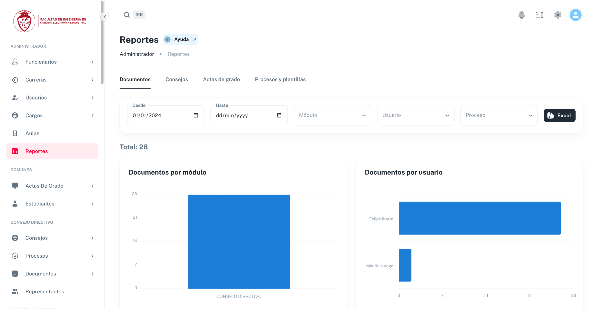
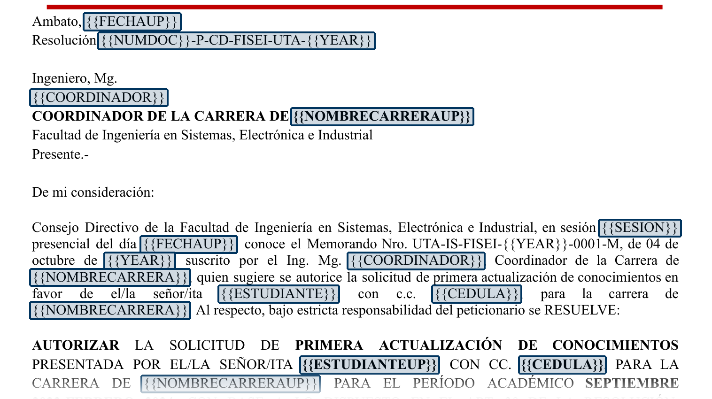
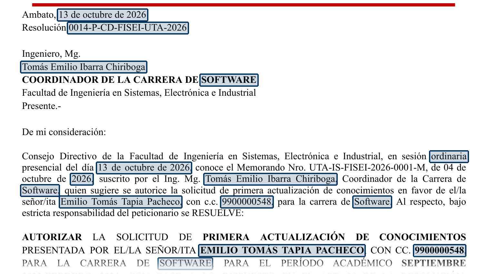
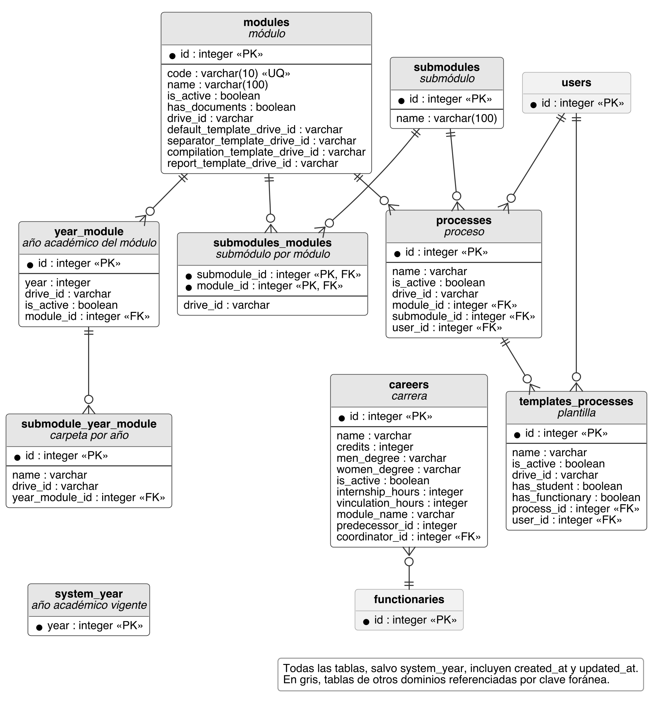

UNIVERSIDAD TÉCNICA DE AMBATO
FACULTAD DE INGENIERÍA EN SISTEMAS,
ELECTRÓNICA E INDUSTRIAL
ELECTRÓNICA E INDUSTRIAL
CARRERA DE SOFTWARE
TEMA
SISTEMA WEB MODULAR PARA LA GESTIÓN DOCUMENTAL ACADÉMICO-ADMINISTRATIVA DE LA FISEI-UTA Y SU INCIDENCIA EN LA MANTENIBILIDAD (ISO/IEC 25010)
Trabajo de titulación, modalidad Proyecto de Investigación, previo a la obtención del título de Ingeniero de Software
AUTOR: Jair Alexis Mera Toasa
TUTOR: Ing. Santiago David Jara Moya MSc.
TUTOR: Ing. Santiago David Jara Moya MSc.
Ambato, Ecuador · 2026
Introducción · Contexto
2,100 documentos al año y dos versiones previas de GENDocs
Documentos oficiales al año
2,100
actas, resoluciones, acuerdos y actas de grado
Cada documento exige
numeración secuencial
archivo en la nube
acceso diferenciado
2021 · V1
Laravel y VueJS
Automatizó los procedimientos manuales
Pendiente
archivos, numeración y acceso granular
2022 · V2
Laravel y ReactJS
Sumó Titulación y el Consejo Académico
Pendiente
módulos fijos en el código; el reinicio anual borraba registros
2026
Esta investigación
Versión modular, medida frente a V2
Fuente: [13] tesis de GENDocs V1; [14] tesis de GENDocs V2.
Introducción · El problema
Un grado de modularidad bajo y sin evaluar encarecía cada cambio
Efectos
Mantenimiento: del 50 al 90 % de los recursos
Seis meses sin acceso a los documentos (2024)
El reinicio anual borra registros históricos
Cada proceso nuevo exige reescribir código
↑
↑
↑
↑
Problema
Bajo grado de modularidad del sistema, con impacto medible en la mantenibilidad
↑
↑
↑
↑
Causas
Módulos y procesos fijos en el código
Sin control de acceso granular
Dependencia técnica de quien lo desarrolló
Sin evaluación frente a ISO/IEC 25010
Pregunta de investigación
¿De qué manera incide el grado de modularidad del sistema sobre su mantenibilidad, según la norma ISO/IEC 25010?
Fuente: árbol de problemas, Anexo A; [2] Hunt, 2008; [3] Hejazi, 2013; [4] Christa, 2016.
Introducción · Antecedentes investigativos
La literatura liga modularidad y mantenibilidad, pero casi no en gestión documental académica
Mapeo sistemático en ocho bases
De monolito a modular, caso de estudio [5]
−75 %
acoplamiento (CBO)
−72 a −76 %
complejidad ciclomática
−88 a −94 %
deuda técnica
2 de 32
estudios tratan la gestión documental académica: las tesis de GENDocs V1 y V2
Fuente: [5] Milić y Makajić-Nikolić, 2022; [13], [14] tesis de GENDocs. Los 32 estudios son 30 artículos y 2 tesis; protocolo de [19] Kitchenham, 2015, y [20], [21] Petersen, 2008 y 2015.
Objetivos · Objetivo general
Desarrollar el sistema y evaluar la incidencia de su modularidad
Desarrollar un sistema web con arquitectura modular para la gestión documental académico-administrativa de la FISEI, evaluando la incidencia del grado de modularidad sobre la mantenibilidad mediante análisis estático basado en la norma ISO/IEC 25010.
Variable independiente
Grado de modularidad
del sistema web de gestión documental
incide en
Variable dependiente
Mantenibilidad
cinco sub-características de ISO/IEC 25010
Objetivos · Objetivos específicos
Tres objetivos específicos: analizar, implementar y evaluar
1
Analizar el grado de modularidad del sistema de gestión documental GENDOCSv2 de la FISEI mediante métricas de acoplamiento, cohesión y complejidad del código fuente.
2
Implementar un sistema web con arquitectura modular que incorpore configuración dinámica de módulos, organización automatizada de archivos en la nube y control de acceso granular para la gestión documental de la FISEI.
3
Evaluar la incidencia del grado de modularidad sobre la mantenibilidad del sistema implementado mediante análisis estático de código y verificación del cumplimiento de requerimientos funcionales basado en las sub-características de la norma ISO/IEC 25010.
Metodología de investigación
Medir el antecedente, construir la versión modular y medirla con las mismas herramientas
Medir GENDocs V2
objetivo 1
→
Construir GENDocs V3
objetivo 2
→
Medir GENDocs V3
objetivo 3
Modalidad
Enfoque cuantitativo
Nivel descriptivo-correlacional
Diseño cuasi-experimental antes-después, de caso único
Población A · personal
10 personas, censo
1 secretaria de facultad
entrevista
9 secretarias de carrera
cuestionario
Población B · código fuente
2 versiones, censo
| V2 | V3 | |
| Clases, backend | 253 | 435 |
| Módulos, frontend | 276 | 534 |
Fuente: [53] Hernández Sampieri, 2014, para el diseño cuasi-experimental.
Metodología · Instrumentos
Dos instrumentos validados por jueces y con confiabilidad sobre 0.75
Entrevista
12 preguntas
secretaria de facultad
Cuestionario
15 ítems
9 secretarias de carrera
Tres bloques: experiencia, necesidades y aceptación
Juicio de tres expertos, de 1 a 5
| Entrevista | Cuestionario | |
| Claridad | 4.22 | 4.31 |
| Coherencia | 4.28 | 4.31 |
| Relevancia | 4.22 | 4.29 |
Los 27 reactivos quedaron en banda alta o muy alta.
Confiabilidad del cuestionario
Fuente: [56] Lawshe, 1975; [57] Cronbach, 1951; [58] Kuder y Richardson, 1937. Jueces: docentes de la FISEI con cuarto nivel.
Metodología · Resultados de los instrumentos
El personal pidió autonomía, archivos ordenados en la nube y acceso por carrera
origen de las tres capacidades del objetivo 2media de 1 a 5, n = 9
88.9 %
perdió o no tuvo acceso a documentos
88.9 %
pide carga masiva desde Excel
77.8 %
duplicó plantillas a mano entre carreras
Fuente: cuestionario estructurado a las nueve secretarias de carrera, ítems I1.1 a I3.3 y dicotómicos I1.4, I2.4 e I1.5.
Metodología · Análisis estático
Ocho métricas miden las cinco sub-características de la mantenibilidad
| Métrica | Sub-características que mide | Rango de referencia |
|---|---|---|
| CBO, acoplamiento | ModularidadReusabilidad | menos de 5 |
| LCOM, falta de cohesión | Modularidad | menos de 0.5 |
| WMC, métodos ponderados | AnalizabilidadModificabilidad | menos de 20 |
| Complejidad ciclomática | AnalizabilidadTesteabilidad | 1 a 10, baja |
| Complejidad cognitiva | Analizabilidad | contextual |
| Líneas duplicadas | ReusabilidadModificabilidad | menos de 5 % |
| Índice de mantenibilidad | Mantenibilidad global | 65 o más |
| Deuda técnica | Mantenibilidad global | menor es mejor |
Herramientas: SonarQube, PHPMetrics (clases de V2), dependency-cruiser (dependencias y ciclos) y un analizador CK sobre ts-morph (clases de V3).
OBJETIVO ESPECÍFICO 1
Analizar el grado de modularidad de GENDocs V2
Métricas de acoplamiento, cohesión y complejidad sobre el código fuente del sistema antecedente.
01
Objetivo específico 1 · Grado de modularidad de V2
El grado de modularidad de V2 resultó bajo por descomposición y por concentración
Descomposición: por capa técnica
Cohesión
34.78 %de clases cohesionadas: 88 de 253
Acoplamiento
22clases sobre el rango de CBO;
17 son controladoras
17 son controladoras
Ciclicidad: 3 ciclos de dependencia
Fuente: PHPMetrics y dependency-cruiser sobre GENDocs V2. Clase cohesionada: un solo componente de LCOM. Rango de CBO: menos de cinco vecinos.
Objetivo específico 1 · Mantenibilidad de V2
En la escala del estudio, V2 calificó B, B, A, B, C y A
BModularidadcohesión: LCOM medio 2.93
BReusabilidadduplicación del frontend
AAnalizabilidadsin indicadores fuera de rango
BModificabilidadduplicación del frontend
CTesteabilidadsin pruebas en ninguna capa
AMantenibilidad globalsin indicadores fuera de rango
A: ningún indicador fuera de rango · B: uno · C: dos o más
Duplicación en el frontend
19.64 %
de las líneas, casi el cuádruple del rango de 5 %
0 %5 %25 %
Fuente: SonarQube y PHPMetrics sobre GENDocs V2; escala del estudio, que aplica los rangos de referencia de cada métrica.
OBJETIVO ESPECÍFICO 2
Implementar un sistema web con arquitectura modular
Configuración dinámica de módulos, organización automatizada de archivos en la nube y control de acceso granular.
02
Objetivo específico 2 · El sistema desarrollado
GENDocs V3 en pantalla: los reportes del administrador

Documentos generados por módulo y por usuario. El menú lateral sale de los módulos registrados en la base de datos. Datos ficticios.
Objetivo específico 2 · Metodología de desarrollo
XP se adoptó porque sus prácticas actúan sobre el código que se mide
Matriz ponderada, sobre 100
Criterio decisivo, con peso de 22 %
Prácticas de ingeniería sobre el código
Scrum 1 · Kanban 1 · XP 5
Prácticas adoptadas
Integración continua1,407 pruebas en el backendRefactorización guiada por métricasValidación por iteración
Fuente: [61] Saleh, 2019, para los criterios de selección del marco de desarrollo.
Objetivo específico 2 · Planificación por iteraciones
Una semana de diseño y seis iteraciones, de julio a octubre de 2026
Cada iteración cerró con 90 % o más de los requisitos de su bloque, validados por la Secretaría de Facultad.
Objetivo específico 2 · Requisitos del sistema
Veinte requisitos funcionales, trazados a la entrevista y al cuestionario
20
requisitos funcionales
14
no funcionales
16
módulos funcionales
11
casos de uso
20
historias de usuario
AConfiguración dinámica
5 requisitos · I1
BOperación documental
8 requisitos · I2 e I3
CSeguridad y trazabilidad
4 requisitos · I4
DServicios externos
3 requisitos · I5
Ejemplo de trazabilidad
Entrevista E2.1 y E2.3
Cuestionario I2.1, media 4.78
Cuestionario I2.1, media 4.78
→
RF-01
módulos y submódulos definidos en datos
módulos y submódulos definidos en datos
→
Módulo
M1
M1
→
Historia
HU-01
prioridad alta
HU-01
prioridad alta
→
Iteración
I1
I1
→
Evidencia
Anexo D
Anexo D
Objetivo específico 2 · Arquitectura de software
Monolito modular de cuatro capas, con módulos de frontera explícita
Presentación
Navegadores del personal
→
Aplicación web Next.js, con React y MUI
Lógica de negocio
API REST NestJS: un módulo de código por funcionalidad
A Configuración
B Operación
C Seguridad
D Integración
Socket.IO: notificaciones
Colas Bull: generación asíncrona
Datos
PostgreSQL con TypeORM · dominio y auditoría
Redis · colas
Servicios externos
API de Google: Drive, Docs y Sheets
Servidor SMTP · correo
Fuente: [16] Su, 2024: el monolito modular conserva una sola unidad de despliegue y separa el código en módulos con fronteras explícitas.
Objetivo específico 2 · Grado de modularidad
La unidad de código pasa de la capa técnica al módulo funcional
GENDocs V2: paquetes por capa técnica
Un proceso nuevo toca las tres capas a la vez.
→
GENDocs V3: paquetes por módulo funcional
Cada módulo es un paquete con frontera declarada.
Fuente: PHPMetrics sobre el backend de GENDocs V2 (un ciclo entre tareas en cola y servicios); arquitectura de GENDocs V3, con dependencias en un solo sentido hacia tres paquetes transversales.
Objetivo específico 2 · Configuración dinámica de módulos
Un proceso nuevo se registra en datos, sin cambiar el código
En la interfaz
Registrar carrera
crea su módulo, cuatro submódulos, carpetas y plantillas
Iniciar año
cinco verificaciones; conserva el historial
→
En la base de datos
modules
submodules_modules
careers
year_module
→
Se deriva sin cambiar el código
Menú lateral
Ruta dinámica
Vista: una de catorce existentes
Carpetas en la nube
Numeración anual
GENDocs V2 definía la estructura de módulos en el código fuente [14] y su reinicio anual eliminaba registros.
Objetivo específico 2 · Organización automatizada en la nube
Las carpetas en la nube se crean solas por módulo, año y submódulo
- Carpeta raíz
- Carpeta del módulo carrera, consejo o Secretaría de Facultad
- Procesos → Carpeta del proceso → Plantillas
- Año vigente
- Consejos → Carpeta del consejo → Documentos
- Actas de grado → Hojas de calificaciones
- Certificaciones → Certificaciones emitidas
- Años anteriores intactos tras el reinicio anual
- Carpeta del módulo carrera, consejo o Secretaría de Facultad
Cuenta de servicio a cargo de la Secretaría de Facultad
Carpeta de pruebas separada de la de operación
Origen: entrevista, E1.2 (pérdida de acceso por cuentas personales) y E2.4; cuestionario, I2.2 (media 4.56).
Objetivo específico 2 · Control de acceso granular
El acceso se concede por rol, módulo, submódulo y carrera
Rol
cinco roles
Módulo y submódulo
pares concedidos
Carrera
en actas de grado
↓
Al iniciar sesión, el servidor firma un token con el rol, los pares y las carreras
↓
¿Token válido?
401¿Rol permitido?
403¿Submódulo concedido?
403Petición atendida
Un cambio de permiso se aplica de inmediato a la sesión abierta.
Árbol de accesos de un usuario
Objetivo específico 2 · El sistema en operación (1 de 2)
La secretaria elige cuatro datos y el sistema hace el resto
Consejo, proceso, plantilla y estudiante. El número lo propone el sistema.
Al pulsar Crear
1
Asigna el número: nuevo, reservado o encolado
2
Copia la plantilla a la carpeta del consejo
3
Reemplaza las variables con los datos
4
Queda generado y se notifica al estudiante
Capturas del sistema con datos ficticios. La generación corre en cola, con hasta cinco intentos.
Objetivo específico 2 · El sistema en operación (2 de 2)
La plantilla se convierte en documento, con su número y sus datos
Plantilla del proceso · con variables

→
Documento generado · N.º 0014

Del consejo
fecha y tipo de sesión
De la numeración
número secuencial del año
De los registros
estudiante, cédula, carrera y coordinador
Resolución generada por el sistema con datos ficticios. Los recuadros marcan cada variable de la plantilla y el valor que la reemplazó.
OBJETIVO ESPECÍFICO 3
Evaluar la incidencia del grado de modularidad sobre la mantenibilidad
Análisis estático de código y verificación del cumplimiento de los requisitos funcionales, según ISO/IEC 25010.
03
Objetivo específico 3 · Condiciones de la evaluación
Mismas métricas y herramientas, con cifras normalizadas por tamaño
GENDocs V2GENDocs V3
Unidades medidas, de V2 a V3
253 → 435 clases276 → 534 módulos
Cómo se normalizó
Ninguna cifra se compara en valor absoluto
Complejidad y deuda técnica
por millar de líneas de código
787 min de deuda ÷ 32.074 millares = 24.54
Acoplamiento y cohesión
por clase, paquete, módulo o carpeta
Ciclos
frente a los esperados en un grafo aleatorio de igual tamaño y densidad
Medición con SonarQube, dependency-cruiser y el analizador CK, con las definiciones y versiones de la línea base. El ejemplo es la deuda técnica del backend de V3.
Objetivo específico 3 · Grado de modularidad
La versión modular gana los cuatro componentes del perfil
Criterio de descomposición
Por capa técnica→Por módulo funcional, con tres transversales
Clases cohesionadas
un solo componente de LCOM
34.78 % · 88 de 253
95.86 % · 417 de 435
Clases en el rango de CBO
menos de cinco vecinos
91.30 % · 231 de 253
91.95 % · 400 de 435
Ciclos de dependencia
3 ciclos: 1 en backend y 2 en frontend
0 ciclos en las dos capas
GENDocs V2GENDocs V3LCOM medio: de 2.93 a 0.66
Objetivo específico 3 · Mantenibilidad
27 de 37 comparaciones favorecen a la versión modular
V3, 27V2, 6divididas, 2empate, 1sin veredicto, 1
Por sub-característica
Deuda técnica
135.66 → 44.66
min por millar; 3.0 veces menor
Duplicación de líneas
11.81 % → 2.26 %
5.2 veces menor
Pruebas del backend
sin pruebas → 79.8 %
cobertura de líneas
Un indicador asignado a dos sub-características cuenta en ambas; por eso las filas suman más de 37.
Objetivo específico 3 · Calificación y requisitos
Cinco de seis calificaciones en A y los veinte requisitos cumplidos
cumpleparcialno cumple
GENDocs V2: 15 atendidos, 1 completo
GENDocs V3: 20 de 20 cumplidos
Escala: A, ningún indicador fuera de rango; B, uno; C, dos o más. Requisitos funcionales por bloque, verificados con la matriz de trazabilidad del Anexo D.
Objetivo específico 3 · Respuesta a la pregunta de investigación
El grado de modularidad incide directamente en tres sub-características y parcialmente en dos
Directa: depende de la estructura del código
Parcial: depende de las funciones y las pruebas
Lo que queda en contra, con su causa
CBO medio: 1.38 → 1.86
cada dependencia inyectada cuenta como vecino
Acoplamiento por paquete: 2.13 → 4.65
129 de 172 aristas van a paquetes estables
Ciclomática del frontend: 91.49 → 115.92
un punto por función; hay más funciones pequeñas
Conclusiones
Los tres objetivos específicos se cumplieron y, con ellos, el general
Objetivo 1 · Analizar
34.78 %
de clases cohesionadas en V2
Grado de modularidad bajo: capas técnicas, tres ciclos y poca cohesión.
Objetivo 2 · Implementar
16 módulos
y 20 requisitos funcionales
Monolito modular con las tres capacidades del objetivo.
Objetivo 3 · Evaluar
27 de 37
comparaciones a favor de V3
Sin ciclos, deuda técnica 3.0 veces menor y 20 de 20 requisitos.
Un grado de modularidad mayor incide directamente en modularidad, reusabilidad y modificabilidad, y parcialmente en analizabilidad y testeabilidad.
Para la facultad: documentos de consejo, actas de grado y certificaciones desde plantillas, numerados y organizados en la nube.
Recomendaciones
Cuatro recomendaciones para la facultad y para estudios posteriores
Operación por la facultad
Asumir el sistema con su procedimiento de despliegue y respaldo.
Compuerta de calidad
Los rangos de las ocho métricas en la integración continua.
Replicar el método
Evaluar con el mismo protocolo otros sistemas académico-administrativos de la universidad.
Diseño antes-después
Conservarlo y ampliar su validez externa con más casos.
GRACIAS
Jair Alexis Mera Toasa · Tutor: Ing. Santiago David Jara Moya MSc.
Universidad Técnica de Ambato · FISEI · Carrera de Software · 2026
27 de 37
comparaciones a favor
0
ciclos de dependencia
95.86 %
clases cohesionadas
20 de 20
requisitos cumplidos
ANEXO
Material de apoyo
Diapositivas de respaldo para la ronda de preguntas.
A
Anexo · Indicadores con lectura condicionada (1 de 2)
Seis indicadores favorecen a V2: cuatro son de acoplamiento
| Indicador ↓ | V2 | V3 | Causa y evidencia |
|---|---|---|---|
| CBO, media y mediana | 1.38; 0 | 1.86; 1 | Cada dependencia inyectada y cada objeto de transferencia cuenta como vecino. Sobre el umbral hay menos clases: 8.05 % contra 8.70 %. |
| Acoplamiento medio por paquete | 2.13 | 4.65 | 129 de 172 aristas existen por construcción y apuntan a paquetes estables, sin ciclos. |
| Densidad del grafo de paquetes | 0.0968 | 0.1291 | La unidad no es la misma. Con carpeta de primer nivel en las dos versiones se invierte: 0.1471 contra 0.1291. |
↓ menor es mejor. Fuente: indicadores con lectura condicionada, sección 3.3.3 de la tesis.
Anexo · Indicadores con lectura condicionada (2 de 2)
Los otros dos son de complejidad ciclomática, y dos quedan divididos
| Indicador ↓ | V2 | V3 | Causa y evidencia |
|---|---|---|---|
| Ciclomática por millar, frontend y total | 91.49; 100.31 | 115.92; 114.53 | SonarQube suma un punto por función: 74.9 funciones por millar contra 53.5. |
| WMC, percentil 90 dividido | 8 | 10 | Media, mediana y máximo bajan; el peso viene del número de métodos. |
| Acoplamiento aferente por carpeta, mediana dividido | 2 | 4 | 303 carpetas contra 113; la media y el percentil 90 bajan. |
↓ menor es mejor. Fuente: indicadores con lectura condicionada, sección 3.3.3 de la tesis.
Anexo · Las 37 comparaciones (1 de 4)
Modularidad del backend: 6 a favor de V3, 4 de V2 y 1 empate
| Indicador | V2 | V3 | Favorece |
|---|---|---|---|
| CBO, media y mediana ↓ | 1.38; 0 | 1.86; 1 | V2 |
| CBO, percentil 90 y máximo ↓ | 4; 13 | 4; 13 | empate |
| CBO, clases con cinco vecinos o más ↓ | 22 de 253 (8.70 %) | 35 de 435 (8.05 %) | V3 |
| LCOM medio ↓ | 2.93 | 0.66 | V3 |
| LCOM, clases con dos componentes o más ↓ | 165 de 253 (65.22 %) | 18 de 435 (4.14 %) | V3 |
| Acoplamiento aferente medio, paquete ↓ | 2.13 (23) | 4.65 (37) | V2 |
| Acoplamiento eferente medio, paquete ↓ | 2.13 (23) | 4.65 (37) | V2 |
| Densidad del grafo de paquetes ↓ | 0.0968 (49/506) | 0.1291 (172/1,332) | V2 |
| Ciclos de longitud dos entre paquetes ↓ | 1 | 0 | V3 |
| Paquetes en componente fuertemente conexa ↓ | 2 de 23 | 0 de 37 | V3 |
| Ciclos observados sobre esperados, paquete ↓ | 0.42 (1/2.37) | 0.00 (0/11.11) | V3 |
↓ menor es mejor. Entre paréntesis, el número de paquetes o el cociente que da la cifra. Fuente: Tabla F1 de la tesis.
Anexo · Las 37 comparaciones (2 de 4)
Modularidad del frontend y duplicación: 9 de 10 a favor de V3
| Indicador | V2 | V3 | Favorece |
|---|---|---|---|
| Modularidad del frontend · 7 comparaciones | |||
| Acoplamiento eferente medio, módulo ↓ | 4.19 (276) | 3.26 (534) | V3 |
| Aferente por carpeta: media; mediana; p90 ↓ | 15.65; 2; 25 (113) | 10.68; 4; 24 (303) | dividida |
| Eferente por carpeta: media; mediana; p90 ↓ | 33.01; 7; 52 (113) | 13.86; 6; 33 (303) | V3 |
| Ciclos de longitud dos entre módulos ↓ | 2 | 0 | V3 |
| Módulos en componente fuertemente conexa ↓ | 4 de 276 | 0 de 534 | V3 |
| Ciclos observados sobre esperados, módulo ↓ | 0.23 (2/8.79) | 0.00 (0/5.33) | V3 |
| Densidad del grafo de módulos ↓ | 0.0152 | 0.0061 | V3 |
| Reusabilidad · 3 comparaciones de duplicación; el CBO ya consta en modularidad | |||
| Duplicación de líneas, backend ↓ | 1.05 % (184/17,452) | 0.98 % (471/47,993) | V3 |
| Duplicación de líneas, frontend ↓ | 19.64 % (4,713/23,999) | 3.72 % (1,567/42,089) | V3 |
| Duplicación de líneas, total ↓ | 11.81 % (4,897/41,451) | 2.26 % (2,038/90,082) | V3 |
↓ menor es mejor. Entre paréntesis, las unidades medidas o el cociente. Fuente: Tabla F1 y tabla de reusabilidad, sección 3.3.2 de la tesis.
Anexo · Las 37 comparaciones (3 de 4)
Analizabilidad y modificabilidad: 5 a favor de V3, 2 de V2 y 1 dividida
| Indicador | V2 | V3 | Favorece |
|---|---|---|---|
| Analizabilidad · 7 comparaciones | |||
| Complejidad cognitiva por millar, backend ↓ | 32.26 | 27.31 | V3 |
| Complejidad cognitiva por millar, frontend ↓ | 23.61 | 23.57 | V3 |
| Complejidad cognitiva por millar, total ↓ | 26.33 | 25.33 | V3 |
| Complejidad ciclomática por millar, backend ↓ | 119.57 | 112.96 | V3 |
| Complejidad ciclomática por millar, frontend ↓ | 91.49 | 115.92 | V2 |
| Complejidad ciclomática por millar, total ↓ | 100.31 | 114.53 | V2 |
| WMC por clase: media; mediana; p90; máximo ↓ | 4.60; 3; 8; 65 | 3.87; 2; 10; 35 | dividida |
| Modificabilidad · 1 comparación; la duplicación total ya consta en reusabilidad | |||
| WMC, clases con 20 métodos ponderados o más ↓ | 6 de 253 (2.37 %) | 9 de 435 (2.07 %) | V3 |
Ciclomática del frontend: SonarQube suma un punto por función, 74.9 por millar contra 53.5.
↓ menor es mejor. Fuente: tablas de analizabilidad y de modificabilidad, sección 3.3.2, y Tabla F2 de la tesis.
Anexo · Las 37 comparaciones (4 de 4)
Testeabilidad y mantenibilidad global: 7 de 8 a favor de V3
| Indicador | V2 | V3 | Favorece |
|---|---|---|---|
| Testeabilidad · 2 comparaciones; la complejidad ciclomática ya consta en analizabilidad | |||
| Cobertura de líneas, backend ↑ | sin pruebas | 79.8 % | V3 |
| Cobertura de líneas, frontend ↑ | sin pruebas | sin pruebas | sin veredicto |
| Mantenibilidad global · 6 comparaciones | |||
| Deuda técnica, minutos por millar, backend ↓ | 215.22 (2,115) | 24.54 (787) | V3 |
| Deuda técnica, minutos por millar, frontend ↓ | 99.18 (2,126) | 62.50 (2,262) | V3 |
| Deuda técnica, minutos por millar, total ↓ | 135.66 (4,241) | 44.66 (3,049) | V3 |
| Ratio de deuda técnica, backend; frontend ↓ | 0.7 %; 0.3 % | 0.1 %; 0.2 % | V3 |
| Índice de mantenibilidad medio ↑ | 103.75 | 109.60 | V3 |
| Índice de mantenibilidad, clases bajo 65 ↓ | 48 de 253 (18.97 %) | 6 de 435 (1.38 %) | V3 |
37 comparaciones: 27 a favor de V3 · 6 de V2 · 2 divididas · 1 empate · 1 sin veredicto
↓ menor es mejor; ↑ mayor es mejor. Entre paréntesis, los minutos de deuda. Fuente: tablas de testeabilidad y de mantenibilidad global, sección 3.3.2.
Anexo · Escala del estudio
La escala aplica los rangos de referencia de cada métrica
| Sub-característica | Indicadores | Fuera de rango en V2 | Fuera de rango en V3 | V2 | V3 |
|---|---|---|---|---|---|
| Modularidad | CBO y LCOM | LCOM medio 2.93 | ninguno (0.66) | B | A |
| Reusabilidad | duplicación y CBO | duplicación, 19.64 % | ninguno | B | A |
| Analizabilidad | WMC | ninguno (4.60) | ninguno (3.87) | A | A |
| Modificabilidad | duplicación y WMC | duplicación, 19.64 % | ninguno | B | A |
| Testeabilidad | cobertura de líneas | sin pruebas en ninguna capa | sin pruebas en el frontend | C | B |
| Global | índice de mantenibilidad | ninguno (103.75) | ninguno (109.60) | A | A |
A: ningún indicador fuera de rango · B: uno · C: dos o más. La duplicación fuera de rango es la del frontend.
La letra nativa de SonarQube da A a las cuatro bases y no discrimina entre versiones (Tabla F3). Métricas de clase: en rango cuando la media queda dentro del umbral.
Anexo · Herramientas de medición
Las herramientas se fijaron por versión antes de medir
| Herramienta | Versión | Qué mide | Dónde |
|---|---|---|---|
| SonarQube Community Build, con SonarScanner CLI | 26.7.0.124771 8.0.1.6346 | Complejidad ciclomática y cognitiva, duplicación, deuda técnica y calificaciones | V2 y V3, las dos capas |
| PHPMetrics, sobre PHP 8.1.34 | 2.10.0 | CBO, LCOM, WMC, índice de mantenibilidad y acoplamiento por paquete | V2, backend |
| Analizador CK sobre TypeScript, con ts-morph | 27.0.2 | CBO, LCOM, WMC e índice de mantenibilidad, con las definiciones de PHPMetrics | V3, backend |
| dependency-cruiser, con TypeScript 5.9.3 | 16.10.4 | Acoplamiento aferente y eferente, inestabilidad y ciclos | V2, frontend; V3, las dos capas |
Mismas definiciones y versiones en las dos mediciones. El código de V2 permaneció congelado mientras se midió.
Fuente: Tabla E1 de la tesis, herramientas de medición con su versión, y tabla de condiciones de la medición, sección 3.1.1.
Anexo · Tamaño y alcance funcional
V3 tiene más código porque cubre más alcance funcional
| Indicador de tamaño o alcance | V2 | V3 | Razón |
|---|---|---|---|
| Líneas de código, backend | 9,827 | 32,074 | 3.3 |
| Líneas de código, frontend | 21,435 | 36,190 | 1.7 |
| Archivos analizados, backend | 278 | 540 | 1.9 |
| Archivos analizados, frontend | 273 | 532 | 1.9 |
| Rutas HTTP de negocio | 88 | 220 | 2.5 |
| Controladores de dominio | 33 | 64 | 1.9 |
| Modelos de datos o entidades | 34 | 43 | 1.3 |
| Roles de usuario | 4 | 5 | |
| Requisitos atendidos, de veinte | 15 | 20 |
Por qué crece
Cubre los 20 requisitos; V2 atendía 15, uno por completo
Más código, menos deuda
Backend 3.3 veces mayor, con 787 min de deuda técnica contra 2,115
Por eso ninguna cifra se compara en valor absoluto.
Fuente: tabla de contexto de tamaño y alcance, sección 3.3.1 de la tesis; [63] Lehman, 1980, leyes de evolución del software.
Anexo · Cómo se calculó: marco de desarrollo
XP obtuvo 86.4 por suma ponderada de seis criterios
| ID | Criterio | Peso (%) | Scrum | Kanban | XP |
|---|---|---|---|---|---|
| C1 | Viabilidad con equipo unipersonal y supervisión académica | 25 | 2 | 5 | 4 |
| C2 | Prácticas de ingeniería que actúan sobre el código | 22 | 1 | 1 | 5 |
| C3 | Tolerancia a la replanificación dentro de la iteración | 15 | 3 | 5 | 4 |
| C4 | Entregables incrementales documentables | 15 | 5 | 2 | 4 |
| C5 | Sin sobrecarga de ceremonias y roles | 13 | 2 | 5 | 4 |
| C6 | Validación frecuente con el usuario institucional | 10 | 4 | 3 | 5 |
| Calificación ponderada, sobre 100 | 100 | 51.6 | 69.4 | 86.4 |
Calificación = Σ (peso × puntuación) ÷ 5
puntuación de 1 a 5 por criterio
XP: (25·4 + 22·5 + 15·4 + 15·4 + 13·4 + 10·5) ÷ 5
= 432 ÷ 5 = 86.4
Fuente: matriz de selección del marco de desarrollo, sección 3.2.1 de la tesis; factores de selección de [61] Saleh, 2019.
Anexo · Cómo se calculó: instrumentos
Cada cifra de los instrumentos sale de las nueve respuestas
| Cifra | Cómo se calcula | Cuenta |
|---|---|---|
| Media Likert, 4.78 | suma de las respuestas, de 1 a 5, entre 9 | (2·4 + 7·5) ÷ 9 = 43 ÷ 9 |
| Porcentaje, 88.9 % | respuestas «Sí» entre 9 | 8 ÷ 9; con 7 ÷ 9, 77.8 % |
| Juicio de expertos, 4.22 | promedio de tres jueces por criterio, de 1 a 5 | por reactivo y por instrumento |
| CVR, 1.00 y 0.33 | (nₑ − N/2) ÷ (N/2), con N = 3 jueces | 3 de 3: 1.5 ÷ 1.5; 2 de 3: 0.5 ÷ 1.5 |
| Alfa de Cronbach, 0.83 | k/(k−1) · (1 − Σ varianzas de ítem ÷ varianza del total) | k = 9 ítems Likert |
| KR-20, 0.78 | k/(k−1) · (1 − Σ p·q ÷ varianza del total) | k = 5 ítems dicotómicos |
| Muestra, n = 9.77 | N·z²·p·q ÷ (e²·(N−1) + z²·p·q) | N = 10, z = 1.96, p = q = 0.5, e = 0.05 |
Fuente: tabulación del cuestionario y validación, sección 2.2.3 de la tesis; [56] Lawshe, 1975; [57] Cronbach, 1951; [58] Kuder y Richardson, 1937.
Anexo · Cómo se calculó: métricas
Cada cifra de la evaluación es un cociente que se puede rehacer
| Cifra | Cómo se calcula | Cuenta, V2 y V3 |
|---|---|---|
| Clases cohesionadas 34.78 % → 95.86 % | clases con un solo componente de LCOM entre el total de clases | 88 ÷ 253 417 ÷ 435 |
| Duplicación 11.81 % → 2.26 % | líneas duplicadas entre líneas físicas | 4,897 ÷ 41,451 2,038 ÷ 90,082 |
| Deuda por millar 135.66 → 44.66 | minutos de deuda entre millares de líneas de código; «3.0 veces» es 135.66 ÷ 44.66 | 4,241 ÷ 31.262 3,049 ÷ 68.264 |
| Ciclos esperados 2.37 y 11.11 | pares de paquetes por la densidad del grafo al cuadrado | 253 × 0.0968² 666 × 0.1291² |
| Requisitos de V2 75 % y 40 % | atendidos entre veinte; con cada parcial contado como medio | 15 ÷ 20 (1 + 14 × 0.5) ÷ 20 |
Fuente: tablas de la sección 3.3 y Anexo F de la tesis. Las cuentas usan los conteos que publica cada tabla.
Anexo · Alcance de la evaluación
La mantenibilidad se evaluó en sus cinco sub-características
Mantenibilidad · análisis estático con ocho métricas
| Modularidad | acoplamiento, cohesión y ciclos |
| Reusabilidad | duplicación de líneas y CBO |
| Analizabilidad | complejidad cognitiva y ciclomática, y WMC |
| Modificabilidad | duplicación de líneas y WMC |
| Testeabilidad | complejidad ciclomática y cobertura de líneas |
| Global | deuda técnica e índice de mantenibilidad |
Adecuación funcional
Completitud, con la matriz de trazabilidad de los 20 requisitos
Requisitos de diseño
Seguridad, fiabilidad, eficiencia de desempeño, compatibilidad, capacidad de interacción y flexibilidad: RNF-06 a RNF-13
Fuente: [47] ISO/IEC 25010:2023; tabla de cobertura de la norma, sección 3.3 de la tesis. Los objetivos delimitan la evaluación.
Anexo · Selección de tecnologías (1 de 2)
Backend: solo NestJS prescribe una unidad de modularidad
Tres criterios en cada capa: soporte a la separación en módulos, el de mayor peso porque es la variable independiente; continuidad; y adopción.
| Criterio | Laravel (V2) | Express | NestJS ✓ |
|---|---|---|---|
| Unidad de modularidad prescrita mayor peso | Paquetes por capa técnica | Ninguna | Módulos con encapsulación e inyección de dependencias |
| Lenguaje compartido con el frontend | No | Sí | Sí |
| Continuidad con la versión anterior | Sí | No | No |
| Uso reportado en 2025 | 8.9 % | 19.9 % | 6.7 % |
La adopción de Express no compensa que no prescriba ninguna unidad de modularidad. La continuidad con PHP pesó menos porque el área técnica cambió con cada versión.
Fuente: comparación de frameworks de backend, sección 3.2.2 de la tesis. Uso: encuestados que usaron la tecnología en el último año, [62] Stack Overflow, 2025.
Anexo · Selección de tecnologías (2 de 2)
Next.js conserva React, y PostgreSQL es además el más usado
| Frontend | React con Vite (V2) | Angular | Next.js ✓ |
|---|---|---|---|
| Enrutador | Biblioteca externa, rutas declaradas en código | Integrado en el marco | Por sistema de archivos, con segmentos dinámicos |
| Continuidad con la versión anterior | Sí | No | Sí, conserva React |
| Uso reportado en 2025 | 44.7 % (React) | 18.2 % | 20.8 % |
| Base de datos | PostgreSQL ✓ | MySQL (V2) | MongoDB |
|---|---|---|---|
| Modelo de datos | Relacional | Relacional | Documental |
| Búsqueda sin tildes y por trigramas | unaccent, pg_trgm | No aplica | No aplica |
| Uso reportado en 2025 | 55.6 % | 40.5 % | 24 % |
Fuente: comparaciones de la sección 3.2.2 de la tesis. Un segmento dinámico resuelve desde datos el módulo y el submódulo. Uso: [62] Stack Overflow, 2025.
Anexo · Numeración secuencial
Un número puede estar reservado, usado o encolado
Ámbitos, con reinicio anual
Documentos: por año del módulo
Actas de grado: por carrera y año
Certificaciones: por año de Secretaría de Facultad
En certificaciones, el menor encolado se toma con bloqueo de fila; si no hay, el siguiente con bloqueo consultivo.
Anexo · Generación de un documento
El documento se registra al instante y se genera en cola
Al crear el documento
1
La secretaria elige plantilla, número, funcionarios y estudiantes.
2
La numeración asigna el número: nuevo, reservado o encolado.
3
El documento se guarda «en generación», con sus variables.
4
La generación se encola y la interfaz responde de inmediato.
→
Generación asíncrona
5
La cola procesa el trabajo, con hasta cinco intentos.
6
Drive copia la plantilla en la carpeta del consejo.
7
Docs reemplaza las variables.
8
Queda «generado» o «fallido», y el usuario recibe el aviso.
Fuente: diagrama de secuencia de la generación de un documento, sección 3.2.6 de la tesis; requisitos RF-05, RF-06 y RF-16.
Anexo · Infraestructura y respaldo
Cuatro contenedores en la máquina virtual de la facultad
Máquina virtual · AlmaLinux 8 · Docker Compose
frontend
Next.js
backend
NestJS y colas
postgres
con volumen
bull_redis
con volumen
Variables de entorno
fuera del control de versiones
Respaldo diario
retención de siete días
Cada actualización: respaldo previo → API con migraciones y verificación de salud → aplicación web
Fuera del servidor
Navegadores del personal
API de Google: Drive, Docs y Sheets
Servidor SMTP
Anexo · Requisitos funcionales (1 de 2)
Bloques A y C: nueve requisitos, todos cumplidos en V3
A · Núcleo de configuración dinámica
RF-01Módulos y submódulos definidos en datos
RF-02Registro de carrera en cascada
RF-03Procesos por módulo, con carpeta propia
RF-04Plantillas centralizadas y su migración
RF-20Reportes con filtros, gráficos y Excel
C · Seguridad y trazabilidad
RF-13Autenticación y recuperación de contraseña
RF-14Acceso por usuario, módulo, submódulo y carrera
RF-15Auditoría de inserciones, cambios y borrados
RF-16Notificación del resultado de la generación
Evidencia por requisito en la matriz de trazabilidad (Tabla D1); veredicto del antecedente en la Tabla D2.
Anexo · Requisitos funcionales (2 de 2)
Bloques B y D: once requisitos, todos cumplidos en V3
B · Operación documental
RF-05Generar, regenerar y reintentar documentos
RF-06Numeración secuencial con reserva y reinicio anual
RF-07Consejos: miembros, asistencia y generación
RF-08Actas de grado: tribunal, calificaciones y estados
RF-09Carga en lote de estudiantes, funcionarios y actas
RF-10Funcionarios, cargos, carreras y aulas
RF-11Certificaciones y procedimientos por correo
RF-12Búsqueda sin tildes ni orden de nombres
D · Integración con servicios externos
RF-17Archivos en la nube por módulo, submódulo y año
RF-18Generación y vista previa en la nube; PDF
RF-19Correo con adjuntos desde la cuenta institucional
Evidencia por requisito en la matriz de trazabilidad (Tabla D1); veredicto del antecedente en la Tabla D2.
Anexo · Casos de uso
Once casos de uso principales sobre tres actores
| Código | Caso de uso | Actor |
|---|---|---|
| CU-01 | Registrar carrera | Administrador |
| CU-02 | Conceder acceso | Administrador |
| CU-03 | Iniciar nuevo año académico | Administrador |
| CU-04 | Gestionar procesos y plantillas | Secretaria de carrera |
| CU-05 | Generar documento | Secretaria de carrera |
| CU-06 | Convocar consejo | Secretaria de carrera |
| CU-07 | Registrar acta de grado | Secretaria de carrera |
| CU-08 | Cargar actas de grado en lote | Administrador |
| CU-09 | Cerrar actas de grado en lote | Administrador |
| CU-10 | Generar y enviar certificación | Secretaria de facultad |
| CU-11 | Enviar procedimiento | Secretaria de facultad |
Tres actores, cinco roles
Administrador: roles administrador y administrador temporal
Secretarias de carrera y de facultad: rol escritor, con distintos submódulos
El administrador hereda los casos de la secretaria de carrera.
Anexo · Base de datos
La estructura de módulos se guarda en datos, no en código

modules
código, nombre y carpeta del módulo
submodules_modules
par de módulo y submódulo, con su carpeta
careers
carrera con su módulo propio
year_module
año académico del módulo
submodule_year_module
carpeta por año
El modelo completo se presenta en cinco vistas parciales, sección 3.2.7 de la tesis.